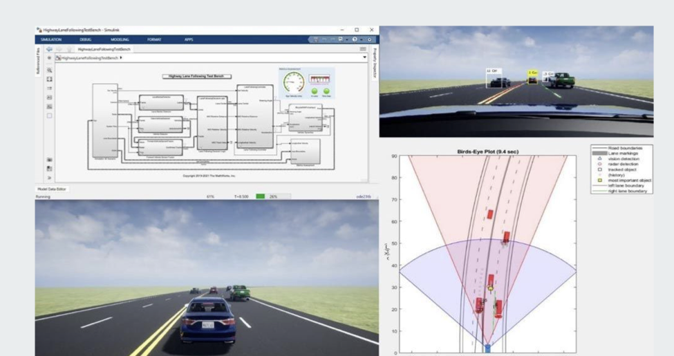
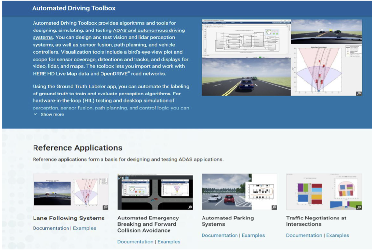
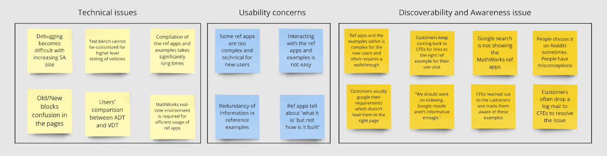
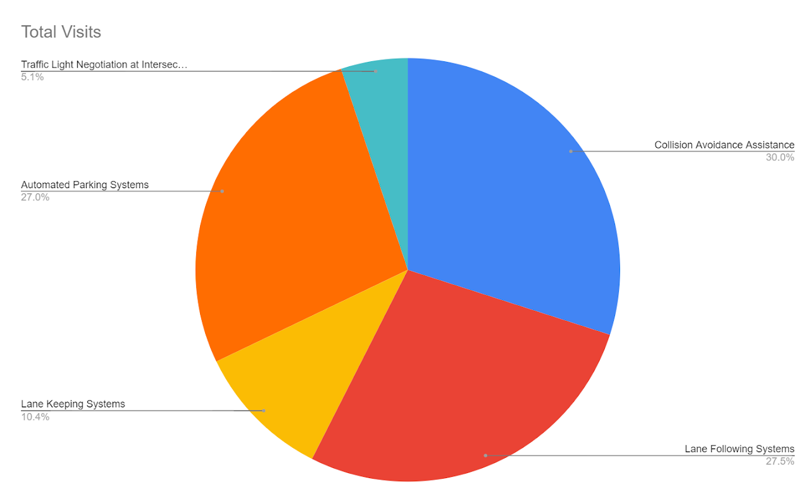
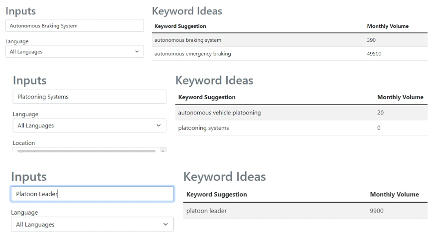
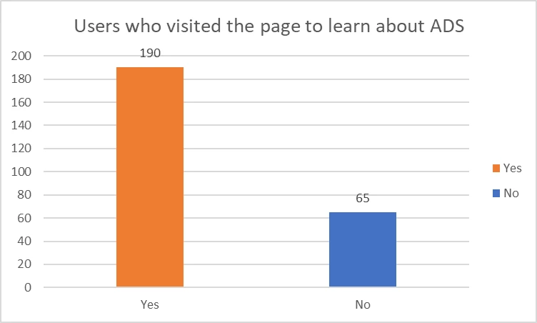
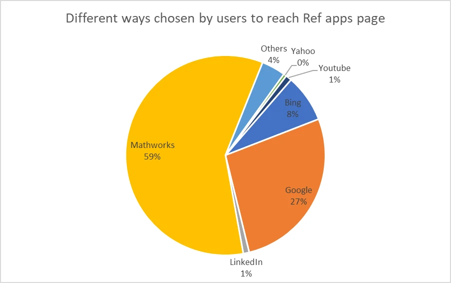
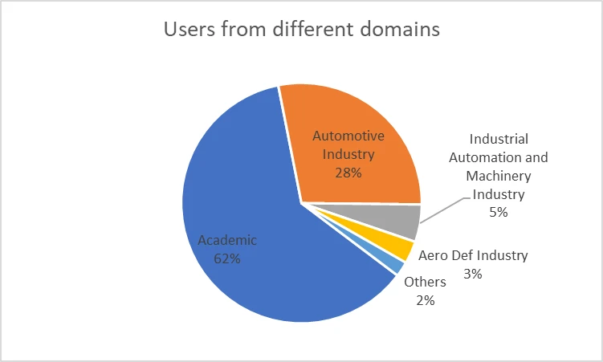
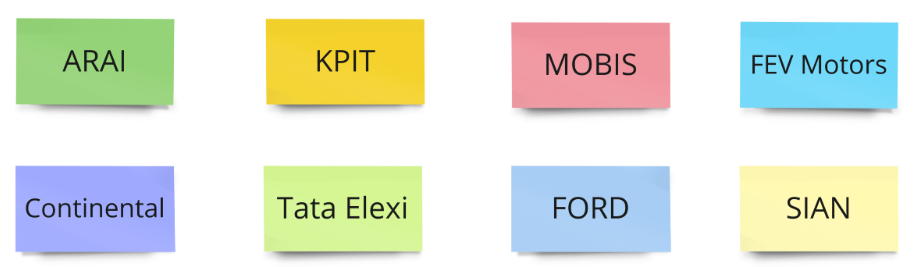
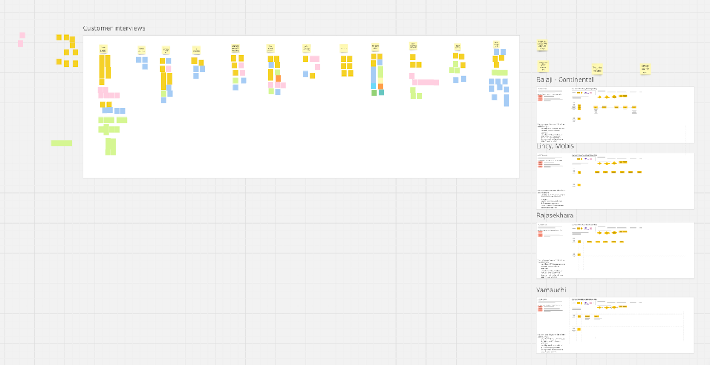

Discoverability issues
Most users found ref apps via CFEs, not search/docs. Google search rarely surfaced ADT pages.
Uncovering systemic IA & content issues through multi-source triangulation.


MATLAB's Automated Driving Toolbox (ADT) provides algorithms and 6 Reference Apps for autonomous driving prototyping.

CFE interviews · initial problem framing
Doc-visit analysis · AdWords keyword analysis
Intercept survey · 5 in-depth interviews
Triangulation · prioritization · recommendations
Six complementary methods, triangulated to separate what was happening from why.
Identified awareness and discoverability issues from Customer Facing Engineers.

Revealed which apps/examples were under-visited by users.

Collision Avoidance, Lane Following, and Automated Parking account for ~85% of visits.
| Application | Total Visits | Avg Visits | Pages | Done | Audited | Avg Quality | Ratings | Avg Rating |
|---|---|---|---|---|---|---|---|---|
| Automated Parking Systems | 21,774 | 4,355 | 5 | 5 | 4 | 3.8 | 22 | 4.2 |
| Collision Avoidance Assistance | 24,137 | 2,194 | 11 | 7 | 6 | 3.8 | 16 | 4.6 |
| Lane Following Systems | 22,154 | 923 | 24 | 21 | 20 | 4.3 | 7 | 3.6 |
| Lane Keeping Systems | 8,401 | 1,050 | 8 | 6 | 5 | 4.4 | 6 | 5.0 |
| Platooning Systems | — | — | 3 | 1 | — | — | — | — |
| Traffic Light Negotiation at Intersections | 4,110 | 822 | 5 | 5 | 4 | 4.8 | 4 | 2.3 |
Source: documentation visit analytics. Highlighted rows = apps that needed attention and were addressed later in the process.
Identified mismatch between search keywords and doc content.


Takeaway: search demand and doc terminology don't match — a content/SEO gap.
44,000 impressions, 127 responses that informed who our users are.



59% of visitors arrived via MathWorks and 27% via Google; 62% were from academia.
5 in-depth sessions with ADT business customers that led to user roles and goals identification.
Companies we conducted interviews with.

Analysis of interview notes and creation of user personas.

Roles and goals identified from the interviews.

Validated insights and workflows, and identified issues.
Four findings explained why valuable reference apps went unused — each validated across five research sources.
Most users found ref apps via CFEs, not search/docs. Google search rarely surfaced ADT pages.
The categorization and structure of the ref apps were found to be unintuitive with no guided entry points in the website.
Customization of apps was difficult, esp. for less experienced users. Several reports emerged about the integration with Radar/Lidar toolbox being poorly documented.
Users want more realistic, end-to-end examples. Several requests made for standardized scenario generation & metrics (for validation/regulation).
The research improved discoverability and app quality, and reduced support load on CFEs.
↑ 37%
VisitsInsights improved discoverability of the apps and supported higher adoption among users, increasing visits by 37%.
↑ 37%
App ratingReference Apps became more useful, relevant, and realistic, increasing app rating by an average of 37%.
Made reference apps more accessible → reducing user frustration, support load on CFEs, and customer support tickets.
Multi-method research (analytics + SEO + qual interviews) revealed insights no single method could.
Engaging stakeholders (Devs, Doc writers, CFEs) early built empathy & accelerated adoption of findings.
Strategic research showed I can connect UX to business goals (adoption, discoverability, retention).
Importance of thinking beyond Usability — tackling awareness, onboarding, documentation.